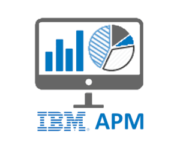

Services - IBM APM
Experience
Projects
IBM APM
End-to-End Implementation and High Availability
Seamless Deployment: Delivered end-to-end deployment and configuration of IBM Tivoli Monitoring (ITM) and IBM Application Performance Management (APM) in high-availability environments, ensuring consistent performance monitoring and resilience.
Agent Deployment Across Platforms: Managed remote deployment of monitoring agents across various platforms, including OS, Database, WebSphere Application Server (WAS), and MQ, enabling efficient, distributed monitoring.
High Availability Architecture: Designed high-availability solutions that ensured uninterrupted monitoring and optimized system performance, even during peak loads or failover scenarios.
Monitoring Agents Configuration
Comprehensive Monitoring Setup: Installed and configured monitoring agents for multiple environments, including OS, databases, and middleware (WAS, MQ), ensuring comprehensive coverage of application performance metrics.
Customized Monitoring Solutions: Developed tailored monitoring situations and thresholds to meet specific customer requirements, utilizing SNMP and other protocols to gather critical performance data.
Application and Infrastructure Insights: Provided actionable insights into the performance and health of applications and infrastructure, enabling proactive management and issue resolution.
Automation and Optimization
Optimized Monitoring Performance: Enhanced the performance and efficiency of IBM APM monitoring agents by optimizing their configuration and deployment, ensuring real-time, accurate data collection.
Automated Incident Response: Developed Netcool Impact policies to automate incident response workflows, including the automated triggering of email notifications and event handling, reducing response times.
Advanced Monitoring Situations: Designed complex monitoring situations that provided deep insights into application behavior, allowing for proactive identification and resolution of performance bottlenecks.
Integration with Other Systems
Third-Party Integrations: Integrated IBM Tivoli tools with a variety of third-party monitoring solutions such as SCOM, HP SIM, CISCO UCS, and SolarWinds, extending the reach and capability of your monitoring infrastructure.
Synchronized Event Management: Implemented bidirectional integration of Tivoli Netcool Omnibus with IBM Tivoli Monitoring, enabling synchronized event management and seamless data flow between systems.
Cross-Platform Visibility: Leveraged cross-platform integrations to provide unified visibility across different monitoring solutions, ensuring that all critical systems were monitored within a cohesive framework.
Centralized Log Solutions
Log Aggregation and Monitoring: Implemented centralized log monitoring solutions for operations teams, aggregating logs from various sources such as MQ, Kafka, and system log files, all visualized through IBM APM.
Real-Time Log Analysis: Enabled real-time log analysis for enhanced visibility into system and application performance, allowing teams to quickly identify and address issues based on log data.
Enhanced Operational Efficiency: Provided operations teams with tools to monitor, search, and analyze log data efficiently, streamlining issue detection and troubleshooting processes.
Comprehensive Training and Support
Operator Training Programs: Conducted in-depth training sessions for operators, ensuring that they were equipped to maximize the capabilities of IBM ITM and APM in monitoring and performance management.
Post-Release Support: Provided ongoing support after deployment, ensuring smooth operation and continuous optimization of IBM ITM and APM environments.
End-User Training and Documentation: Delivered end-user training and created comprehensive documentation to facilitate knowledge transfer, ensuring that teams could operate the monitoring solutions effectively in the long term.